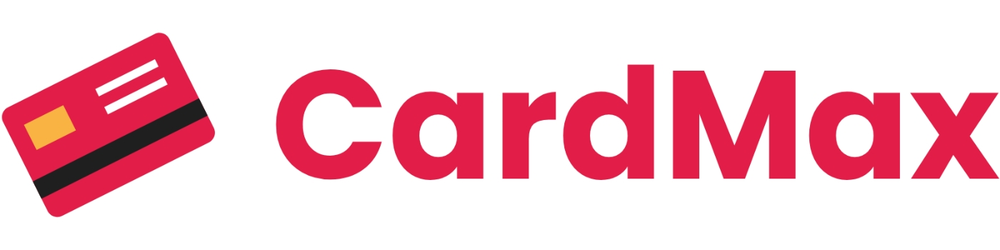
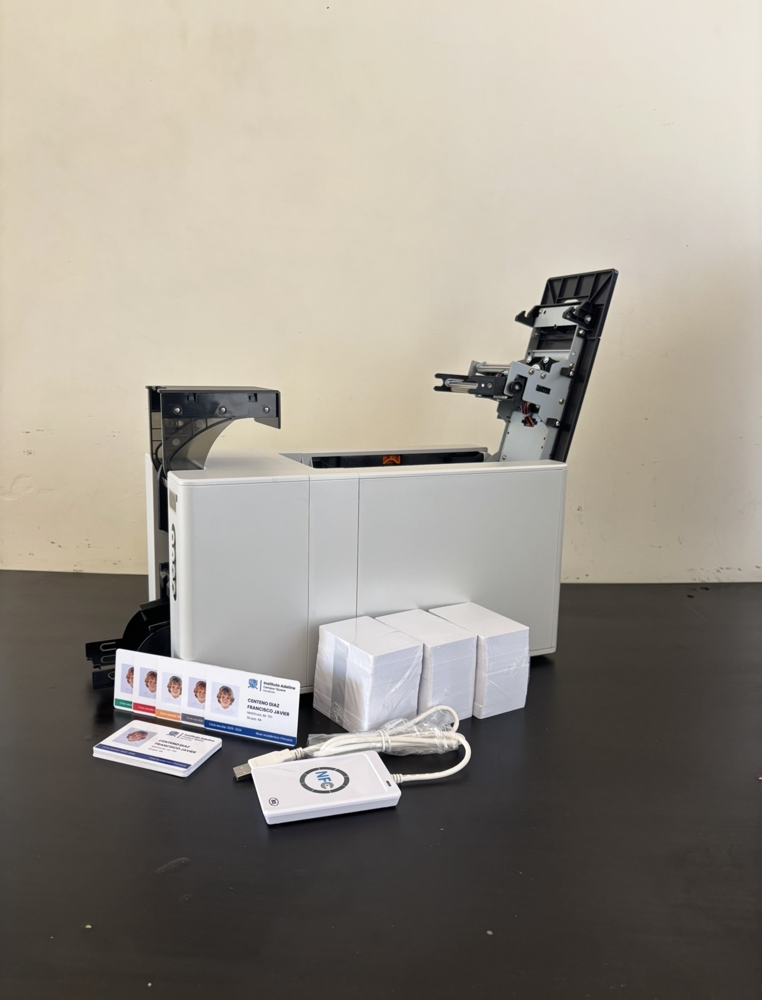
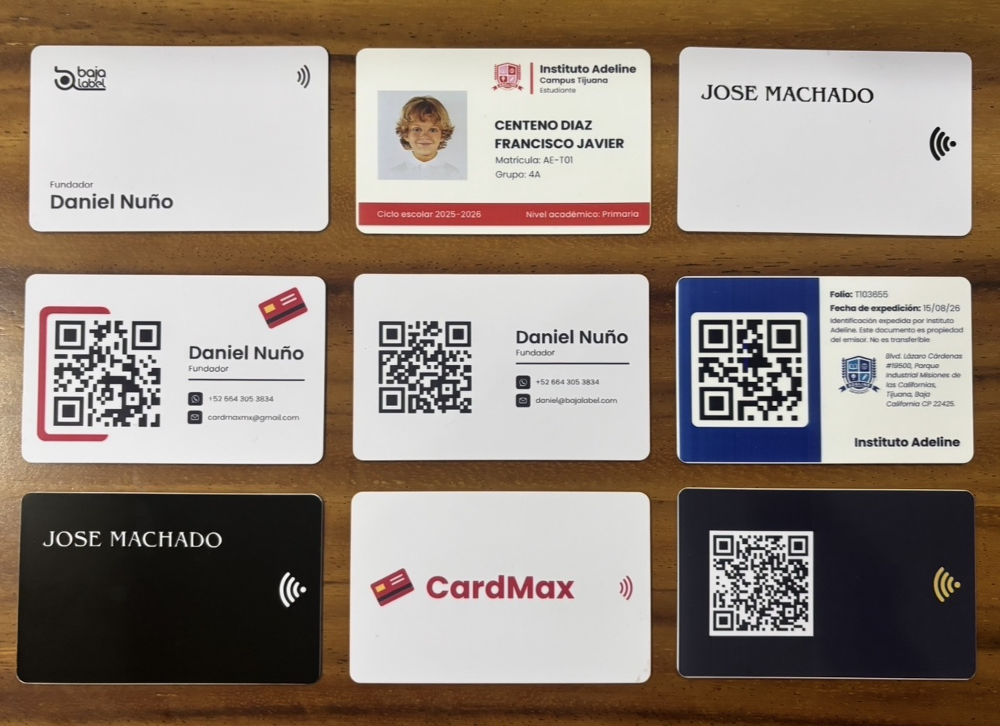
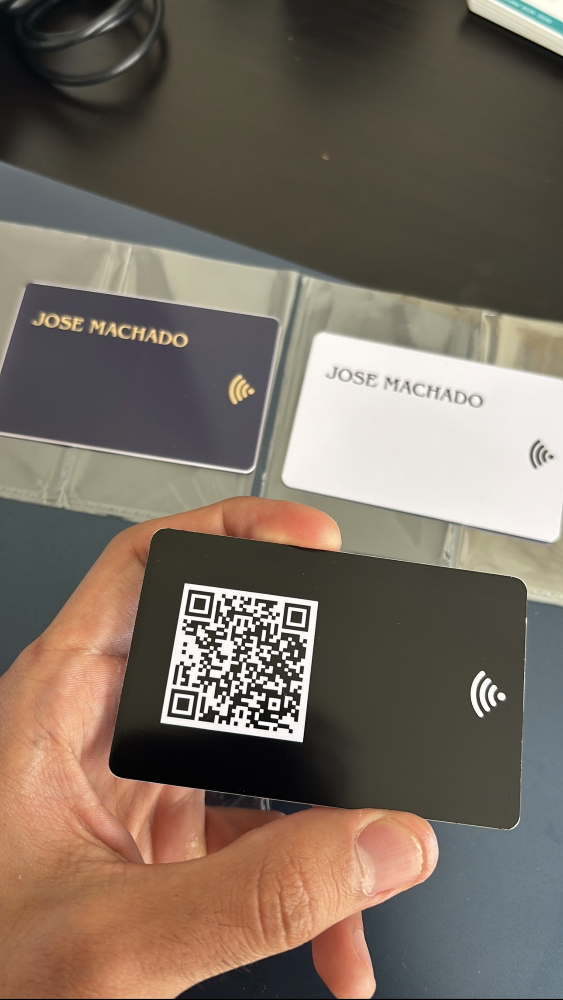
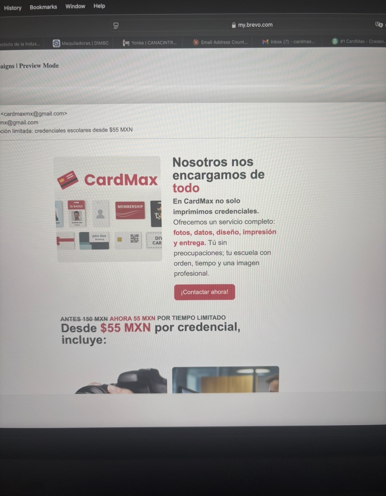
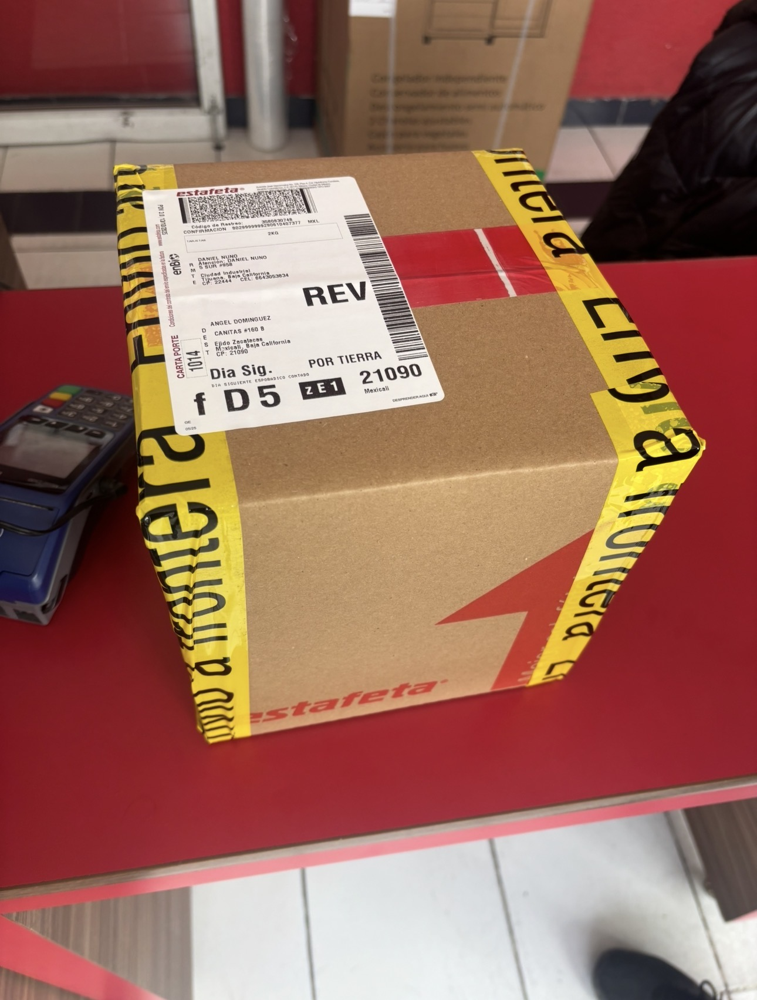
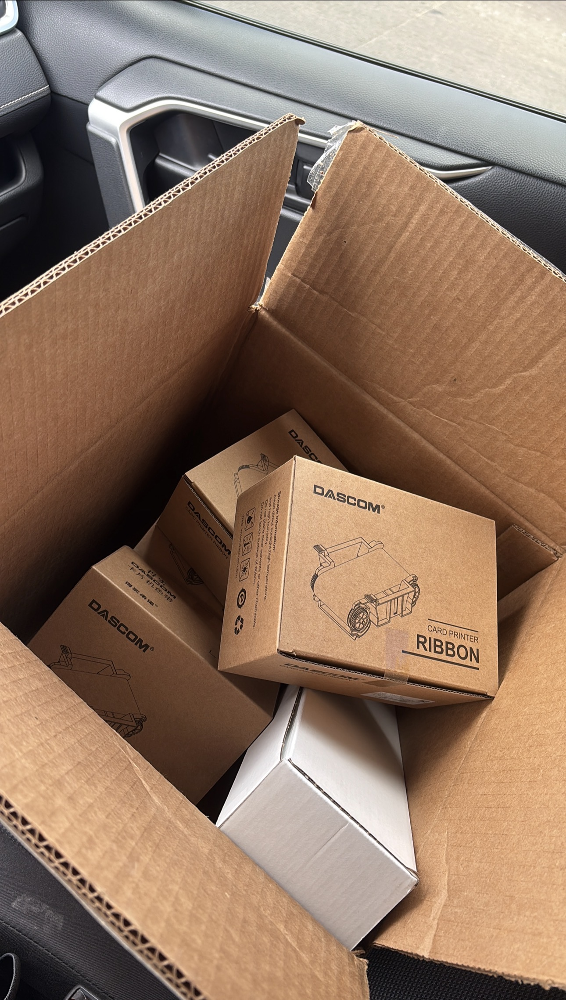
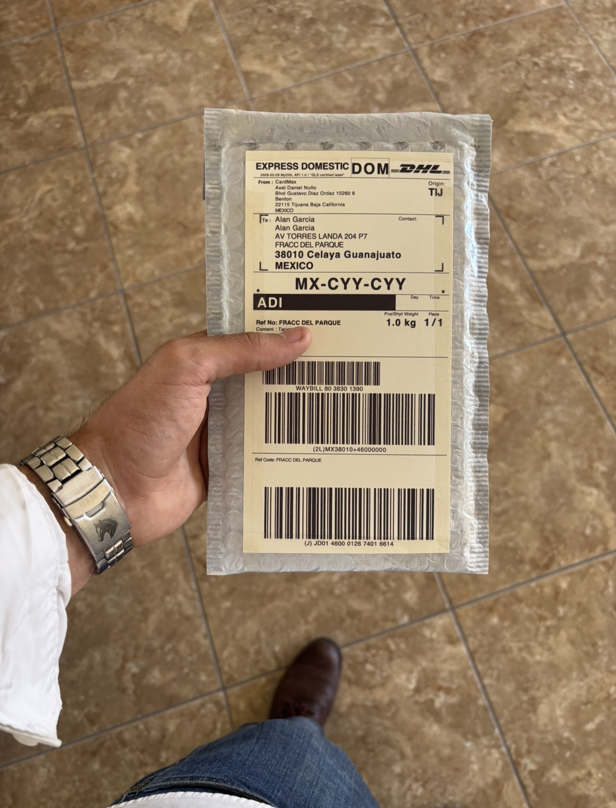
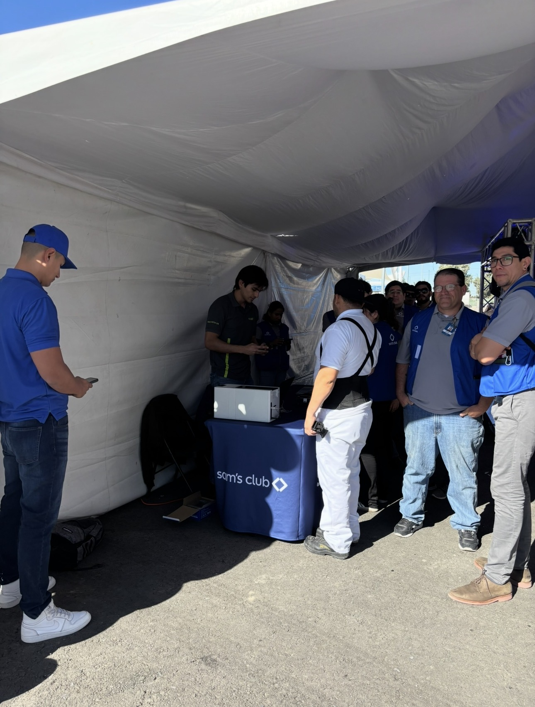
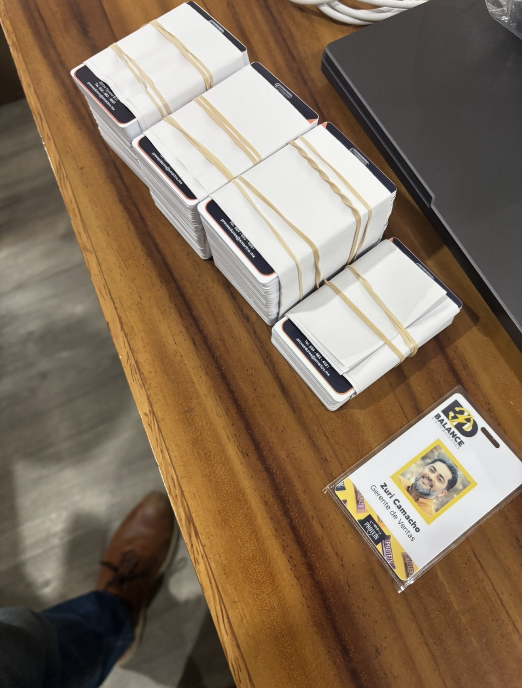

CardMax was not born from a perfect business plan. It started from an opportunity: I had purchased a PVC card printer for a school access-control project, and I realized the machine could solve a much larger problem for schools, corporations, and organizations.
CardMax began indirectly through Alerta Escolar, when I bought my first PVC printer to produce student credentials. That first equipment purchase was made for a software-related need, but it ended up creating the operational base for an entirely different business.

Once the initial school delivery was complete, it became obvious that the printer would sit idle most of the year. That underused capacity pushed me to look for a broader market and think of credential printing as a business opportunity instead of a one-off purchase.

To sell credencialization as a serious service, I needed more than a machine. I created the CardMax brand, built its first identity, and put together a web presence that made the offer look credible for schools, companies, and organizations.
The first sale was small, but strategically important. Selling those first two cards validated that there was real demand, that people were willing to trust a new brand, and that the business could begin with execution rather than scale.

Social media became a key acquisition channel. By sharing the production process, printed results, and behind-the-scenes content on TikTok and Instagram, I built visibility and credibility in a market where trust matters before the first order.

What began with tiny orders eventually grew into production runs of hundreds of credentials. Reaching that point required stronger processes for pricing, proofing, production scheduling, and delivery so that quality could hold even as order size increased.

As order volume increased, margin discipline became essential. I had to understand consumables, materials, sourcing, and supplier negotiation to keep the business competitive without sacrificing quality or delivery reliability.

Serving clients outside Tijuana introduced a new layer of complexity: packaging, guides, shipping, and delivery expectations. Building those logistics capabilities allowed CardMax to move from a local service into a more scalable national operation.

Customer meetings were where product knowledge had to turn into commercial outcomes. Quoting, defending value, and adjusting proposals taught me how to negotiate with business clients while still protecting quality, timelines, and margin.

Reaching more than 4,000 delivered credentials was the result of repeated execution across sales, operations, production, and service. CardMax became a practical school in entrepreneurship, forcing me to solve real problems under real commercial constraints.
